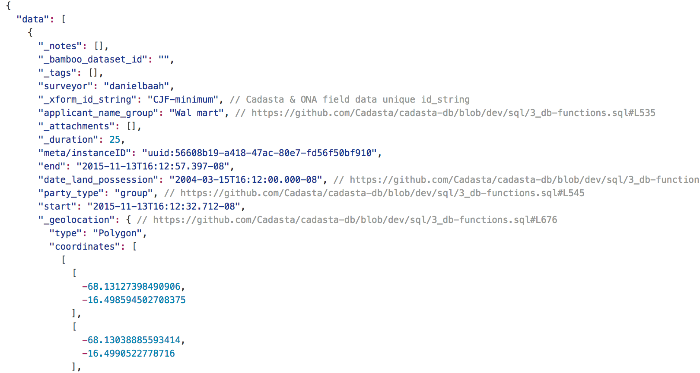
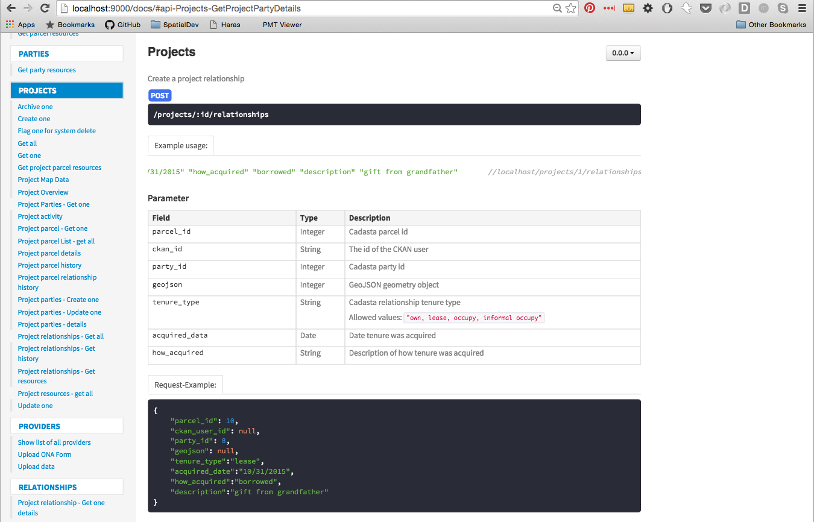
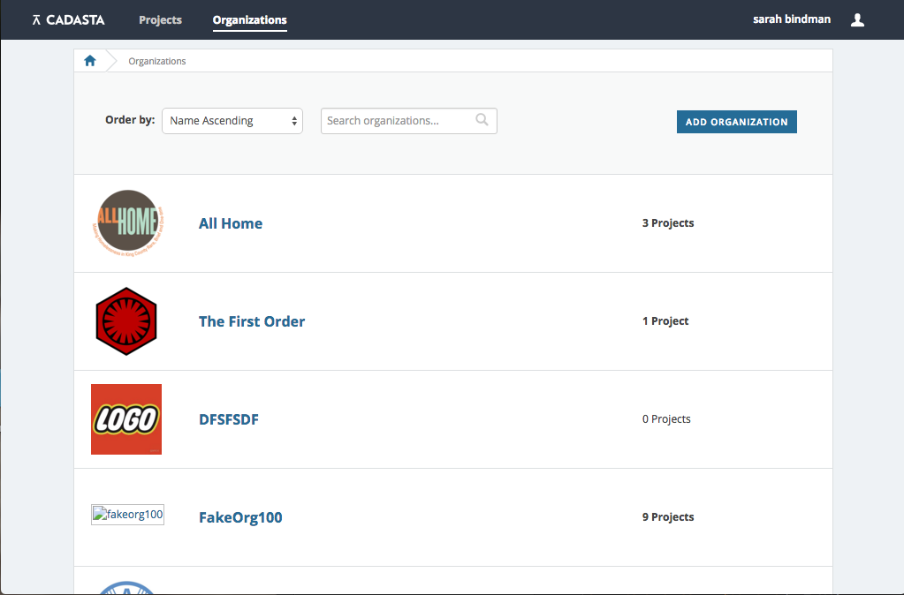
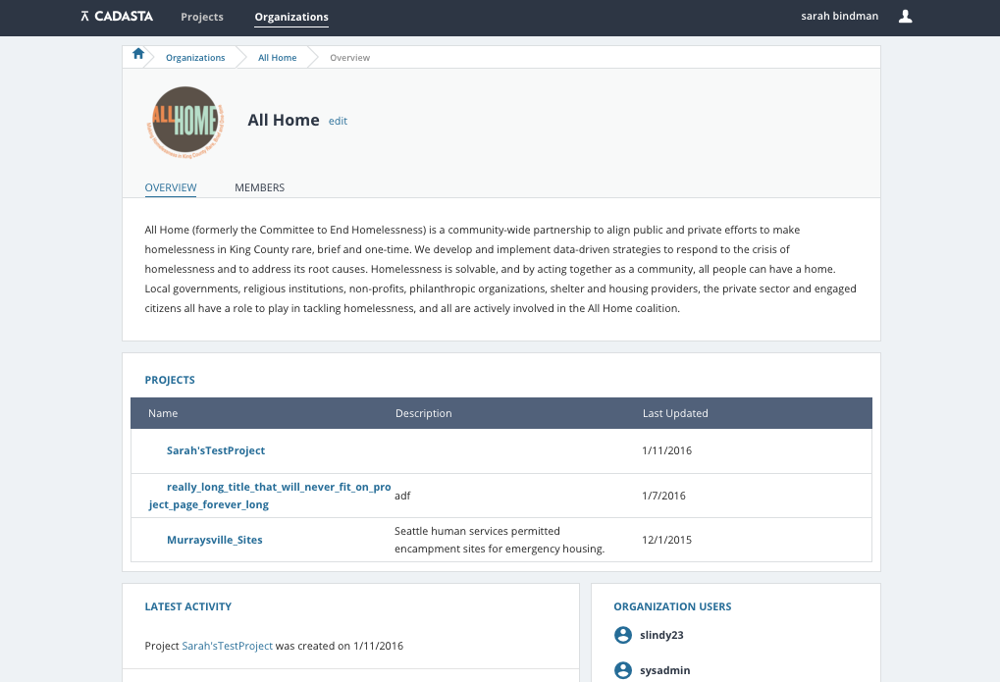

Cadasta
collecting, managing and visualizing property rights
Daniel Baah / @danielduhh
Sarah Bindman / @sarahbindman
Overview
- Project Background
- Tech Stack
- Demo
- Challenges & Opportunities
- Questions
Background
Cadasta
- The Cadasta Foundation is dedicated to developing tools for the collection and management of land-rights data
- Cadasta prioritizes using open source software and making all of their tools open source
Project Requirements
including surveyors, NGO administrators, policy makers etc.
Tech Stack
Technical Requirements
- Open Source
- Extensibility & Modernity
- Localization
Cadasta Provider
Example Common JSON Format Snippet
Cadasta Data Transformer
- API routes & controllers executing scripts/db functions
- 1. Ingest & interpret CJF
- 2. Extract parcels, parties, & relationships
- 3. Load into DB
Cadasta API
- CRUD endpoints for business logic
- include data-transformer, all providers as node modules
Cadasta Database
- Cadasta Platform Business Logic
- parcel (geometries), parties, relationships & history
- survey questions & responses, organizations, projects, resources
Cadasta Platform
- Platform Application
- Handles all user operations
- Angular wrapped inside CKAN
API Docs
Demo
To demo the platform, visit: www.cadasta.org/platform/
Sample List of Cadasta Organizations
Sample Details for a Cadasta Org
Sample List of Project Resources

Challenges & Opportunities
Lessons Learned
- Managing moving parts
- Thoroughly research open-source libraries
- Testing testing testing
Opportunities
- All of the Cadasta code is opensource and can be found at www.github.com/Cadasta
- We would love to continue the dialog about how this software can be used for additional projects
Contact us at @spatialdev | www.spatialdev.com